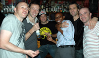
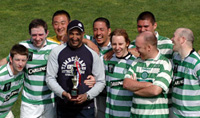
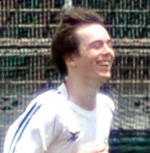
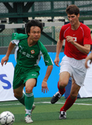

OLD STORIES - June 2008
TML - Half a Decade & Still Going Strong!!
|  |
|
What's this, teams mixing & drinking together - unheard of...... or is it! Good to see!!! |
Legends Sports Bar & Cafe, Roppongi, June 27th,
350 or so of the Footy Japan faithful descended upon Legends Sports Bar in Roppongi (www.legendsports.jp/eng/eng.html) to celebrate, congratulate, intoxicate, commiserate and generally congregate to bid farewell to the Tokyo Metropolis League's 5th season.
Photo Gallery by KeyShots Photographer Kery Raftis - CLICK HERE
The award ceremony this year was not quite as disgraceful as last year's with the majority of acceptance speeches being kept short and devoid of profanity or sabre rattling. We'll be sure to delay the ceremony by an hour or so next year to give everyone time to get utterly leathered, lose all inhibitions and talk utter bollox when they collect their trophies - come on, we're footballers for god sake - it's not the bloody Oscars... more ...
FJ.
Chiba Libra Run Out of Juice in Nagano.
|  |
|
Celts celebrate another cup! |
ALT East Japan tournament. Sugadaira, Nagano, Weeked 14th & 15th June,
TML teams led the way at the ALT tournament on the beautiful grass pitches of Sugadaira this past weekend. The Final was an encounter between division 1's Kanto Celts & Sala (aka Chiba Libra).
PHOTOS: GALLERY1, GALLERY 2
It was once again Henry Monohan who took the honours for the Celts, scoring the only goal in a tight final. This is the 2nd piece of silverware this year for the Celts, following their victory at the Charity 6's erlier in the year. Other TML teams also participated inc. BEFC, JETS & a mixture of Hibs & Geckoes. more ...
FJ.
 |
|
Lenny Tui, a spritely 47 had a trick or 2 up his sleeve when he came up against Ian rush. |
It's All a Rush in Bangkok
Patana International School, Bangkok. May 31st~June 1st.
Footy Japan played the all star in our first game, very entertaining with Jun receiving a black eye from Viv Anderson, Peter Reid calling the shots for them...
PHOTO GALLERY
The highlight for me was nut megging Ian Rush and being called a Jammy bustard by another player, we had a great first half but eventually went down 2-0. more
LT.
Baby Brits Topple Sala
|  |
|
Young Dan Clarke all smiles after scoring BFC's winner |
ASIJ, Saturday 7th June,
BFC`s recruiting foray into the international school system has paid dividends as the TML champions celebrated their second successive title by putting third placed Sala to the sword on Saturday, thanks largely to the quality of their teenage strike force.
The contest didn`t quite have the usual sense of anticipation that usually accompanies this fixture. Newly crowned champions BFC were coming off an inexplicable thumping at the hands of the Hibs in the cup final whilst Sala had succumbed 2-1 to the same opposition a week prior thanks in no small part to the genetically engineered “Mini Hitoshi” who thwarted attack after Sala attack with his bionic limbs. more ...
DB.
Cap'n Kirk Reaches Final Frontier.
|  |
|
Cap'n Kirk seen recently at the Hong Kong soccer 7's masters. |
Hachioji Park, Sunday 15th June,
Captain Kirk Neureiter ended his footballing career in Japan probably in the same fashion as he started it, marshalling his side to a controlled and efficient victory over a team at least as good as his own individually but overmatched mentally and as a unit.
Rumour has it that Kirk actually started here with the BFC but of course hes known as the face of the Swiss who, with the Hibs, dominated the 1st 3 years of the TML. more ...
ST.
Top vs Bottom, yet Honours Even
Hachioji Park, Sunday 15th June,
After draining all the energy and resources early on in the season with 10 back to back wins, Lions small but talented and growing squad held off a desperate and strong KGFC.
Lions were missing at least 6 regulars, the most significant being the influential Captain - Somi, Zuhair, Fahad, Khalil, and Mohammed Birkia. Lions were able to field a strong team, though the subs bench was left cold with only 1 player, whilst Abu was itching on the line (linesman) sitting out the game due to the red card he picked in the previous game. more ...
HS.